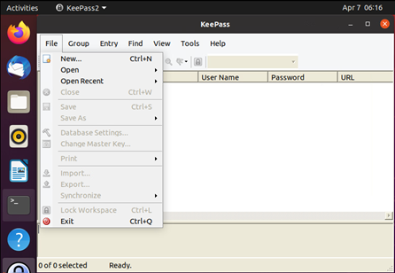
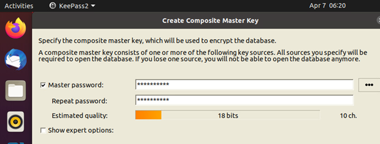
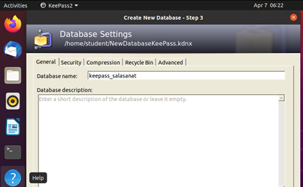
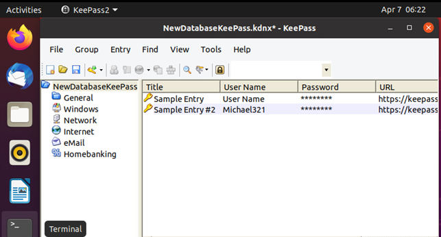
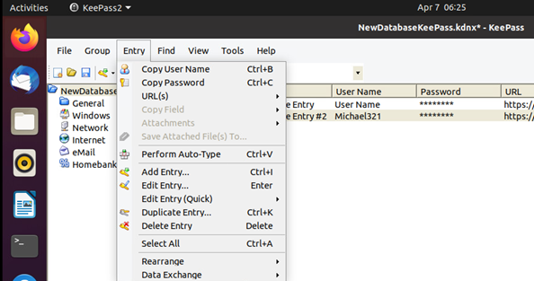
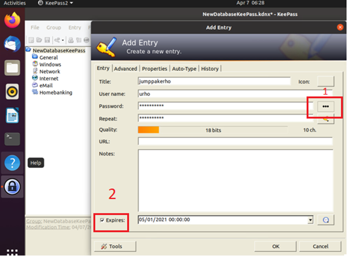
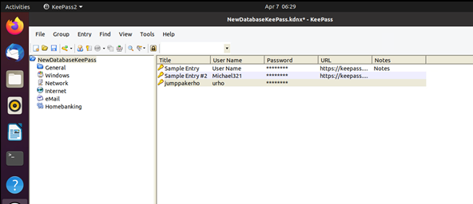
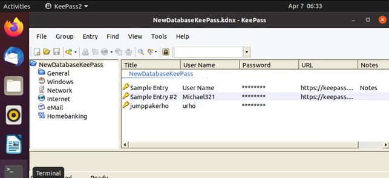
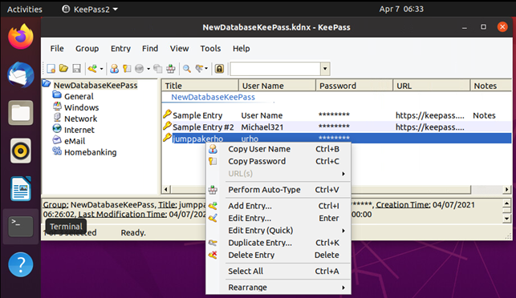

Nyt kun KeePass on asennettu, ollaan askel lähempänä käytön aloitusta. Ennen kuin kuitenkaan päästään syöttämään salasanoja KeePassin holviin säilöön, täytyy tehdä muutamia aloitus- ja asennusmäärityksiä. Seuraavassa askel askeleelta ohjeet KeePassin käyttöön.
KeePass tietokannan luominen
Käynnistä KeePass-ohjelma. Valitse File > New.
Tallenna tietokanta turvalliseen paikkaan, esimerkiksi omalle K-levyllesi.

Täytä Master password -kohta. Se on salasana, jolla myöhemmin saat auki koko tietokannan ja sen sisältämät salasanat.
Halutessa voidaan valita myös kohdat Key file / provider ja Windows user account, mutta silloin tarvitaan ne kaikki, jotta voidaan avata tietokanta. Normaalikäytössä riittää salasanan käyttäminen.
Windows user account -vaihtoehtoa ei kuitenkaan suositella, koska tällöin salasanatietokanta ei ole siirrettävissä toiselle koneelle. Jos haluat käyttää KeePassia myös kotikoneella, niin saman nimisen tunnuksen luominen siihen ei auta. Eli suosittelemme vain salasanaa tai salasanan ja key filen yhdistelmää. Vahvista valinta klikkaamalla OK.
Voit antaa tietokannalle nimen, kuvauksen ja määritellä muita tietoja. Klikkaa OK.

Tietokanta avautuu. Kannassa on valmiina kaksi mallitiedostoa.

Salasanan lisääminen tietokantaan
Avaa Entry > Add Entry.
Täytä kentät. Klikkaamalla (1) näet salasanat selväkielisenä. Voit asettaa tiedoille päättymisajan kohdasta (2).
Klikkaa OK.

Uusi salasana on listassa viimeisenä.

KeePass tietokannan käyttäminen
Kun haluat saada tallennetut salasanat käyttöösi, toimi näin:Avaa KeePass. Syötä Master Password ja klikkaa OK.

Tietokanta avautuu. Voit avata tiedoston kaksoisklikkaamalla,

Hiiren kakkospainikkeella voi kopioida salasanan. Salasana katoaa leikepöydältä 12 sekunnissa.
